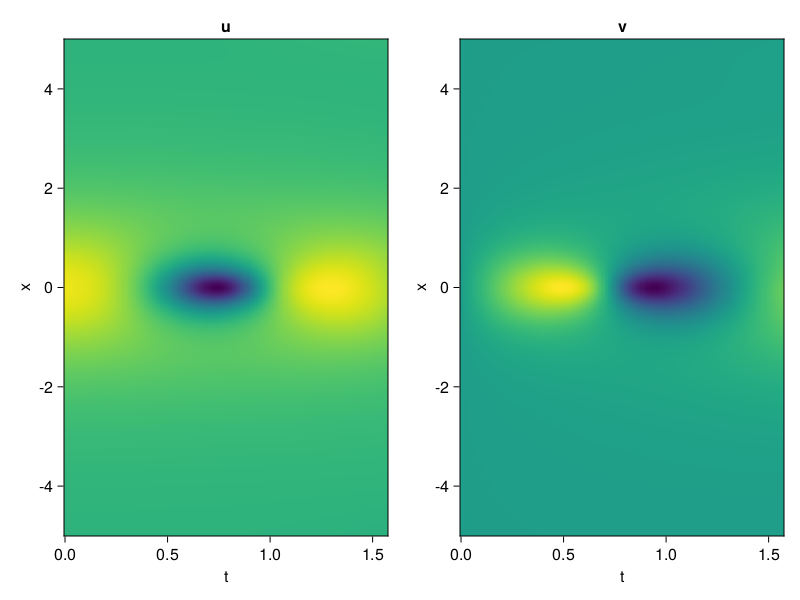
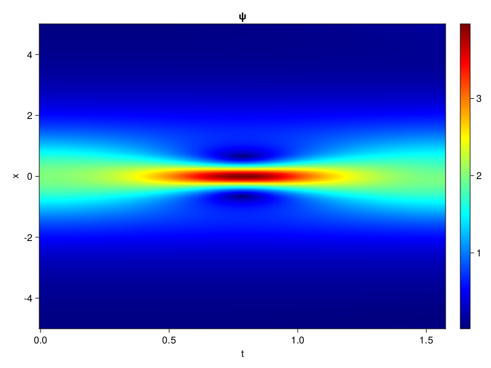
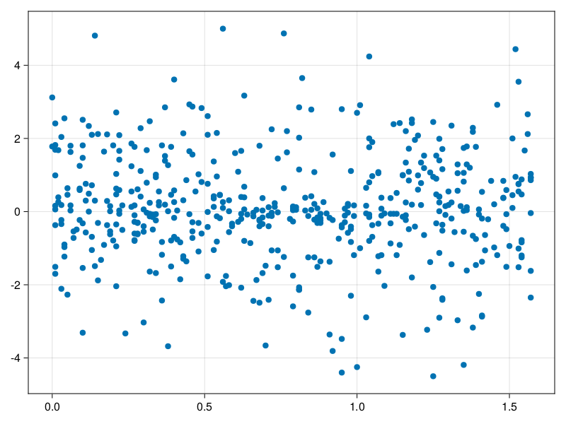

Schrödinger equation
The nonlinear Shrödinger equation is given by
\[\mathrm{i} \partial_t \psi=-\frac{1}{2} \sigma \partial_{x x} \psi-\beta|\psi|^2 \psi\]
Let $\sigma=\beta=1, \psi=u+v i$, the equation can be transformed into a system of partial differential equations
using ModelingToolkit, IntervalSets, Sophon, CairoMakie
using Optimization, OptimizationOptimJL
@parameters x,t
@variables u(..), v(..)
Dₜ = Differential(t)
Dₓ² = Differential(x)^2
eqs=[Dₜ(u(x,t)) ~ -Dₓ²(v(x,t))/2 - (abs2(v(x,t)) + abs2(u(x,t))) * v(x,t),
Dₜ(v(x,t)) ~ Dₓ²(u(x,t))/2 + (abs2(v(x,t)) + abs2(u(x,t))) * u(x,t)]
bcs = [u(x, 0.0) ~ 2sech(x),
v(x, 0.0) ~ 0.0,
u(-5.0, t) ~ u(5.0, t),
v(-5.0, t) ~ v(5.0, t)]
domains = [x ∈ Interval(-5.0, 5.0),
t ∈ Interval(0.0, π/2)]
@named pde_system = PDESystem(eqs, bcs, domains, [x,t], [u(x,t),v(x,t)])\[ \begin{align} \frac{\mathrm{d}}{\mathrm{d}t} u\left( x, t \right) =& - \frac{1}{2} \frac{\mathrm{d}}{\mathrm{d}x} \frac{\mathrm{d}}{\mathrm{d}x} v\left( x, t \right) - \left( \left|u\left( x, t \right)\right|^{2} + \left|v\left( x, t \right)\right|^{2} \right) v\left( x, t \right) \\ \frac{\mathrm{d}}{\mathrm{d}t} v\left( x, t \right) =& \frac{1}{2} \frac{\mathrm{d}}{\mathrm{d}x} \frac{\mathrm{d}}{\mathrm{d}x} u\left( x, t \right) + \left( \left|u\left( x, t \right)\right|^{2} + \left|v\left( x, t \right)\right|^{2} \right) u\left( x, t \right) \end{align} \]
pinn = PINN(u = Siren(2,1; hidden_dims=16,num_layers=4, omega = 1.0),
v = Siren(2,1; hidden_dims=16,num_layers=4, omega = 1.0))
sampler = QuasiRandomSampler(500, (200,200,20,20))
strategy = NonAdaptiveTraining(1,(10,10,1,1))
prob = Sophon.discretize(pde_system, pinn, sampler, strategy)OptimizationProblem. In-place: true
u0: ComponentVector{Float64}(u = (layer_1 = (weight = [0.1735008955001831 0.25044506788253784; 0.03748363256454468 0.38472747802734375; … ; -0.1442028284072876 -0.18747460842132568; 0.15594983100891113 0.19862335920333862], bias = [0.0; 0.0; … ; 0.0; 0.0;;]), layer_2 = (weight = [-0.5552284717559814 -0.14948570728302002 … 0.5001354217529297 -0.07388976961374283; 0.29309603571891785 -0.5643592476844788 … 0.5881926417350769 -0.10198947787284851; … ; 0.0828203558921814 -0.3399465084075928 … 0.3653256297111511 -0.5311695337295532; 0.11672258377075195 -0.5539528727531433 … -0.4142228960990906 -0.07611898332834244], bias = [0.0; 0.0; … ; 0.0; 0.0;;]), layer_3 = (weight = [-0.4442315697669983 0.3370112478733063 … -0.5665043592453003 -0.6108846664428711; -0.4168361723423004 0.29976755380630493 … -0.5010946393013 0.232427179813385; … ; 0.5640729665756226 -0.3213968575000763 … 0.4759708642959595 -0.5507843494415283; -0.15814809501171112 -0.40760964155197144 … 0.3013075888156891 -0.2368537038564682], bias = [0.0; 0.0; … ; 0.0; 0.0;;]), layer_4 = (weight = [0.0600585900247097 -0.09177488833665848 … 0.28228527307510376 -0.4325546324253082; 0.17895914614200592 -0.5337287783622742 … 0.15164607763290405 0.3253330588340759; … ; -0.421089768409729 -0.23315681517124176 … -0.3371722102165222 0.1506359726190567; -0.33831167221069336 0.2795659899711609 … 0.4725677967071533 -0.33379819989204407], bias = [0.0; 0.0; … ; 0.0; 0.0;;]), layer_5 = (weight = [0.15315668284893036 -0.44472935795783997 … -0.41890257596969604 0.30323055386543274], bias = [0.0;;])), v = (layer_1 = (weight = [-0.11704123020172119 0.27708178758621216; -0.4932871460914612 0.40138405561447144; … ; -0.19222915172576904 0.3697037100791931; -0.32414132356643677 0.33158499002456665], bias = [0.0; 0.0; … ; 0.0; 0.0;;]), layer_2 = (weight = [0.37568381428718567 0.08763714879751205 … 0.4962792992591858 -0.6021437048912048; 0.2848553955554962 -0.5329434275627136 … 0.02718457579612732 -0.02692885510623455; … ; 0.1344619244337082 -0.2552235424518585 … -0.03077780455350876 0.41885215044021606; -0.16724912822246552 0.10683656483888626 … 0.4279698431491852 -0.13021358847618103], bias = [0.0; 0.0; … ; 0.0; 0.0;;]), layer_3 = (weight = [-0.3772798180580139 -0.24911844730377197 … 0.08528594672679901 0.43816304206848145; 0.3023490011692047 -0.33177775144577026 … -0.004020939581096172 0.452195405960083; … ; -0.27275213599205017 0.30192407965660095 … 0.10199189186096191 -0.21199418604373932; 0.04763638973236084 -0.5628163814544678 … -0.5173220038414001 0.6013779640197754], bias = [0.0; 0.0; … ; 0.0; 0.0;;]), layer_4 = (weight = [0.19333286583423615 -0.08730170875787735 … 0.35203349590301514 0.42573782801628113; 0.5006798505783081 0.3237026035785675 … 0.5507072806358337 0.041624363511800766; … ; 0.36551010608673096 -0.5356121063232422 … 0.005915520712733269 0.26881659030914307; -0.06764465570449829 -0.5598029494285583 … -0.07752534002065659 0.5445019602775574], bias = [0.0; 0.0; … ; 0.0; 0.0;;]), layer_5 = (weight = [0.31275513768196106 0.6108836531639099 … -0.20742304623126984 -0.35611334443092346], bias = [0.0;;])))Now we train the neural nets and resample data while training.
function train(pde_system, prob, sampler, strategy, resample_period = 500, n=10)
bfgs = BFGS()
res = Optimization.solve(prob, bfgs; maxiters=2000)
for i in 1:n
data = Sophon.sample(pde_system, sampler)
prob = remake(prob; u0=res.u, p=data)
res = Optimization.solve(prob, bfgs; maxiters=resample_period)
end
return res
end
res = train(pde_system, prob, sampler, strategy)u: ComponentVector{Float64}(u = (layer_1 = (weight = [0.9688504634076651 0.26246640923390724; 0.03465084911016817 0.6499331101362766; … ; -0.38151379883922365 -0.052801303184315904; 0.40782181622149444 0.24543136810878707], bias = [0.06680278229351061; -0.5395094720655013; … ; 0.25694688647366687; 0.048428041238027464;;]), layer_2 = (weight = [-0.406996579115704 -0.24625841502528847 … 0.35266627334463596 -0.004000883081316472; 0.13165678721497173 -0.058976695915710586 … 0.544486901551643 0.0944899395094537; … ; -0.000565684552310825 -0.3437049456667682 … 0.20462908603753932 -0.560446168232955; -0.27122940395686157 -0.7443693867046739 … -0.6859188775091868 -0.21722199579403212], bias = [0.03905476752611571; 0.014517111555410163; … ; 0.0012866859587054265; -0.19356425711943015;;]), layer_3 = (weight = [-0.38750593038442954 0.30011287632003564 … -0.4975685106264265 -0.9172680249930526; -0.33672359202570334 0.6694793548584773 … -0.3486600477957901 0.05019149971008731; … ; 0.3424298103226523 -0.15365472575687583 … 0.5301962674092499 -0.5419021471533164; -0.229541478836222 -0.5199091971895102 … 0.2963253060626326 -0.048160217597899665], bias = [0.16133328620145132; -0.22547594800368503; … ; 0.09067379155920664; -0.20959843867023079;;]), layer_4 = (weight = [0.11652199278709492 -0.14818023250396056 … 0.46034878442096117 -0.38708637577536414; 0.4234570192871689 -0.38288624705536134 … 0.006471840191510365 0.8074087125371509; … ; -0.27969469461318 -0.6538946916875649 … -0.512829925167094 0.09760853484228288; -0.6345967579821553 0.5472906478433204 … -0.0031254773890717603 -0.2802647491881784], bias = [0.3941683646570286; 0.1971370517769782; … ; -0.28587827079559086; -0.3482692452620037;;]), layer_5 = (weight = [0.2062413755752317 -1.1304378946302718 … -0.8110893219040826 0.29002714163920074], bias = [-0.0770017521266613;;])), v = (layer_1 = (weight = [-0.2771446643205409 0.23716601161902634; -0.9480509852902024 0.7174902119936848; … ; -0.3223794513991385 0.8581170350278148; -0.2811132015043657 0.5538186340088238], bias = [-0.1434560797653861; -0.09236342556099326; … ; -0.1515811596317008; -0.043768560288700825;;]), layer_2 = (weight = [0.5390717832564639 0.1326568833738383 … -0.01039649248791936 -0.7983731777030858; 0.28050883324412157 -0.6611897784646554 … -0.7065779624382394 -0.062226666743737426; … ; 0.011169121673203377 -0.2970894955789553 … -0.007448852679850936 0.4130010995253199; -0.27716174934922466 -0.07166654178267592 … 0.2243833051306464 -0.29504738633714866], bias = [-0.1562718855078532; -0.3259158510545866; … ; -0.11728357879875999; -0.02579259983940991;;]), layer_3 = (weight = [-0.19411906346435578 -0.9464511369296088 … 0.07006974832464917 0.35702744771940725; -0.047019360571016536 -1.069208362807073 … 0.5156687071903686 0.608107437953603; … ; -0.28229865642561025 -0.520695315113591 … 0.09540177416450143 -0.26851116480467363; 0.4174320876063372 0.23705629447830825 … -0.48883335636346853 0.3749122307478572], bias = [-0.20884924235419206; -0.12776541308563522; … ; -0.056435090624210975; 0.2401204669084135;;]), layer_4 = (weight = [1.222390970775279 0.2759121402023689 … 0.4978653335648805 0.10932565642334204; 0.5473276652222301 0.4180310796932814 … 0.4312924303102457 0.26867696828985876; … ; 0.28424069751538517 -0.3121325883938769 … -0.06567227444690237 0.03880608404235269; -0.5888658331996612 -0.5269733614450702 … -0.3434737851787251 0.5237792242164451], bias = [-0.4791894791387021; -0.27569053182290176; … ; 0.34891581556876494; 0.1668697742113677;;]), layer_5 = (weight = [0.47641793316381226 1.1859535049330807 … -0.22344832248626745 0.6552203333254846], bias = [0.5815491535596705;;])))phi = pinn.phi
ps = res.u
xs, ts= [infimum(d.domain):0.01:supremum(d.domain) for d in pde_system.domain]
u = [sum(phi.u(([x,t]), ps.u)) for x in xs, t in ts]
v = [sum(phi.v(([x,t]), ps.v)) for x in xs, t in ts]
ψ = @. sqrt(u^2+ v^2)
axis = (xlabel="t", ylabel="x", title="u")
fig, ax1, hm1 = heatmap(ts, xs, u', axis=axis)
ax2, hm2= heatmap(fig[1, end+1], ts, xs, v', axis= merge(axis, (; title="v")))
display(fig)
axis = (xlabel="t", ylabel="x", title="ψ")
fig, ax1, hm1 = heatmap(ts, xs, ψ', axis=axis, colormap=:jet)
Colorbar(fig[:, end+1], hm1)
display(fig)
Customize Sampling
Bascially any sampling method is supportted. For example we can sample data according to the predicted solution.
using StatsBase
data = vec([[x, t] for x in xs, t in ts])
wv = vec(ψ)
new_data = wsample(data, wv, 500)
new_data = reduce(hcat, new_data)
fig, ax = scatter(new_data[2,:], new_data[1,:])
prob.p[1] = new_data
prob.p[2] = new_data
prob = remake(prob; u0 = res.u)
# res = Optimization.solve(prob, bfgs; maxiters=1000)OptimizationProblem. In-place: true
u0: ComponentVector{Float64}(u = (layer_1 = (weight = [0.9688504634076651 0.26246640923390724; 0.03465084911016817 0.6499331101362766; … ; -0.38151379883922365 -0.052801303184315904; 0.40782181622149444 0.24543136810878707], bias = [0.06680278229351061; -0.5395094720655013; … ; 0.25694688647366687; 0.048428041238027464;;]), layer_2 = (weight = [-0.406996579115704 -0.24625841502528847 … 0.35266627334463596 -0.004000883081316472; 0.13165678721497173 -0.058976695915710586 … 0.544486901551643 0.0944899395094537; … ; -0.000565684552310825 -0.3437049456667682 … 0.20462908603753932 -0.560446168232955; -0.27122940395686157 -0.7443693867046739 … -0.6859188775091868 -0.21722199579403212], bias = [0.03905476752611571; 0.014517111555410163; … ; 0.0012866859587054265; -0.19356425711943015;;]), layer_3 = (weight = [-0.38750593038442954 0.30011287632003564 … -0.4975685106264265 -0.9172680249930526; -0.33672359202570334 0.6694793548584773 … -0.3486600477957901 0.05019149971008731; … ; 0.3424298103226523 -0.15365472575687583 … 0.5301962674092499 -0.5419021471533164; -0.229541478836222 -0.5199091971895102 … 0.2963253060626326 -0.048160217597899665], bias = [0.16133328620145132; -0.22547594800368503; … ; 0.09067379155920664; -0.20959843867023079;;]), layer_4 = (weight = [0.11652199278709492 -0.14818023250396056 … 0.46034878442096117 -0.38708637577536414; 0.4234570192871689 -0.38288624705536134 … 0.006471840191510365 0.8074087125371509; … ; -0.27969469461318 -0.6538946916875649 … -0.512829925167094 0.09760853484228288; -0.6345967579821553 0.5472906478433204 … -0.0031254773890717603 -0.2802647491881784], bias = [0.3941683646570286; 0.1971370517769782; … ; -0.28587827079559086; -0.3482692452620037;;]), layer_5 = (weight = [0.2062413755752317 -1.1304378946302718 … -0.8110893219040826 0.29002714163920074], bias = [-0.0770017521266613;;])), v = (layer_1 = (weight = [-0.2771446643205409 0.23716601161902634; -0.9480509852902024 0.7174902119936848; … ; -0.3223794513991385 0.8581170350278148; -0.2811132015043657 0.5538186340088238], bias = [-0.1434560797653861; -0.09236342556099326; … ; -0.1515811596317008; -0.043768560288700825;;]), layer_2 = (weight = [0.5390717832564639 0.1326568833738383 … -0.01039649248791936 -0.7983731777030858; 0.28050883324412157 -0.6611897784646554 … -0.7065779624382394 -0.062226666743737426; … ; 0.011169121673203377 -0.2970894955789553 … -0.007448852679850936 0.4130010995253199; -0.27716174934922466 -0.07166654178267592 … 0.2243833051306464 -0.29504738633714866], bias = [-0.1562718855078532; -0.3259158510545866; … ; -0.11728357879875999; -0.02579259983940991;;]), layer_3 = (weight = [-0.19411906346435578 -0.9464511369296088 … 0.07006974832464917 0.35702744771940725; -0.047019360571016536 -1.069208362807073 … 0.5156687071903686 0.608107437953603; … ; -0.28229865642561025 -0.520695315113591 … 0.09540177416450143 -0.26851116480467363; 0.4174320876063372 0.23705629447830825 … -0.48883335636346853 0.3749122307478572], bias = [-0.20884924235419206; -0.12776541308563522; … ; -0.056435090624210975; 0.2401204669084135;;]), layer_4 = (weight = [1.222390970775279 0.2759121402023689 … 0.4978653335648805 0.10932565642334204; 0.5473276652222301 0.4180310796932814 … 0.4312924303102457 0.26867696828985876; … ; 0.28424069751538517 -0.3121325883938769 … -0.06567227444690237 0.03880608404235269; -0.5888658331996612 -0.5269733614450702 … -0.3434737851787251 0.5237792242164451], bias = [-0.4791894791387021; -0.27569053182290176; … ; 0.34891581556876494; 0.1668697742113677;;]), layer_5 = (weight = [0.47641793316381226 1.1859535049330807 … -0.22344832248626745 0.6552203333254846], bias = [0.5815491535596705;;])))